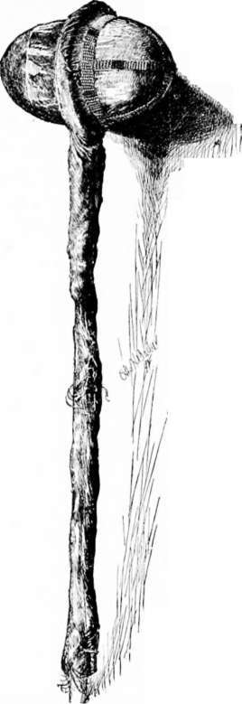

The Last Of The Buffalo. Part 3
Description
This section is from the book "Hunting", by Archibald Rogers. Also available from Amazon: Hunting.
The Last Of The Buffalo. Part 3
It is not only under stress of circumstances that the bison climbs. The mountain buffalo is almost as active as the mountain sheep, and was often found in places that tested the nerve and activity of a man to reach; and even the buffalo of the plains had a fondness for high places, and used to climb up on to broken buttes or high rocky points in the foothills. I have often noticed the same habit among range cattle and horses.
The buffalo were fond of rolling in the dirt; and to this habit, practised when the ground was wet, are due the buffalo wallows which so frequently occur in the old ranges, and which often contain water after all other moisture, except that of the streams, is dried up. These wallows were formed by the rolling of a succession of buffalo in the same moist place, and were often quite deep. They have frequently been described. Less well known was the habit of scratching against trees and rocks. Sometimes a solitary erratic bowlder, five or six feet high, may be seen on the bare prairie, with the ground immediately around it worn down two or three feet below the level of the surrounding earth. This is where the buffalo walked about the stone, rubbing against it, and where they trod loosening the soil, which has been blown away by the wind, so that in course of time a deep trench was worn about the rock. Often single trees along streams were worn quite smooth by the shoulders and sides of the buffalo.
When the first telegraph line was built across the continent, the poles used were light and small; for transportation over the plains was slow and expensive, and it was not thought necessary to raise the wires high above the ground. These poles were much resorted to by the buffalo to scratch against, and before long a great many of them were pushed over. A story, now of considerable antiquity, is told of an ingenious employee of the telegraph company, who devised a plan for preventing the buffalo from disturbing the poles. This he expected to accomplish by driving into them spikes which should prick the animals when they rubbed against them. The result somewhat astonished the inventor; for it was discovered that, where formerly one buffalo rubbed against the smooth telegraph poles, ten now struggled and fought for the chance to scratch themselves against the spiked poles, the iron furnishing just the irritation which their tough hides needed.
It was in spring, when his coat was being shed, that the buffalo, odd-looking enough at any time, presented his most grotesque appearance. The matted hair and wool of the shoulders and sides began to peel off in great sheets; and these sheets, clinging to the skin and flapping in the wind, gave the animal the appearance of being clad in rags.
The buffalo was a timid creature, but brought to bay would fight with ferocity. There were few sights more terrifying to the novice than the spectacle of an old bull at bay. His mighty bulk a quivering mass of active, enraged muscle, the shining horns, the little, spiky tail, and the eyes half hidden beneath the shaggy frontlet, yet gleaming with rage, combined to render him an awe-inspiring object. Nevertheless, owing to their greater speed and activity, the cows were much more to be feared than the bulls.
It was once thought that the buffalo performed annually extensive migrations, and it was even said that those which spent the summer on the banks of the Saskatchewan wintered in Texas. There is no reason for believing this to have been true. Undoubtedly there were slight general movements north and south, and east and west, at certain seasons of the year; but many of the accounts of these movements are entirely misleading, because greatly exaggerated. In one portion of the northern country I know that there was a decided east and west seasonal migration; the herds tending in spring away from the mountains, while in the autumn they worked back again, no doubt seeking shelter in the rough, broken country of the foothills from the cold west winds of the winter.
The buffalo is easily tamed when caught as a calf, and in all its ways of life resembles the domestic cattle. It at once learns to respect a fence, and manifests no disposition to wander.
Three years ago there were in this country about two hundred and fifty domesticated buffalo, in the possession of about a dozen individuals. Of these the most important herd was that of Hon.
Indian Maul.
C. J. Jones, of Garden City, Kan., which included about fifty animals, captured and reared by himself, and the Bedson herd of over eighty, purchased in Manitoba. The Jones herd at one time consisted of about one hundred and fifty head. Next came that of Charles Allard and Michel Pablo, of the Flat Head Agency in Montana, which in 1888 numbered thirty-five, and has now increased to about ninety. Mr. Jones's herd has been broken up; and he now retains only about forty-five head, of which fifteen are breeding cows. He tells me that within the past year or two he has sold over sixty pure buffalo, and that nearly as many more have died through injuries received in transporting them by rail. Mr. Jones is the only individual who of recent years has made any systematic effort to cross the buffalo with our own domestic cattle. As far back as the beginning of the present century, this was successfully done in the West and Northwest, and in Audubon and Bachman's Quadrupeds of America may be found an extremely interesting account, written by Robert Wickliffe, of Lexington, Ky., giving the results of a series of careful and successful experiments which he carried on for more than thirty years. These experiments showed that the cross for certain purposes was a very valuable one, but no systematic efforts to establish and perpetuate a breed of buffalo cattle were afterwards made until within the past ten years. Mr. Jones has bred buffalo bulls to Galloway, Polled Angus, and ordinary range cows, and has succeeded in obtaining calves from all. Such half-breeds are of very large size, extremely hardy, and, as a farmer would say, "easy keepers." They are fertile among themselves or with either parent. A half-breed cow of Mr. Jones's that I examined was fully as large as an ordinary work-ox, and in spring, while nursing a calf, was fat on grass. She lacked the buffalo hump, but her hide would have made a good robe. The great size and tremendous frame of these cross-bred cattle should make them very valuable for beef; while their hardiness would exempt them from the dangers from winter, —so often fatal to domestic range cattle, —and they produce a robe which is quite as valuable as that of the buffalo, and more beautiful because more even all over. If continued, these attempts at cross-breeding may do much to improve our Western range cattle.
Continue to: